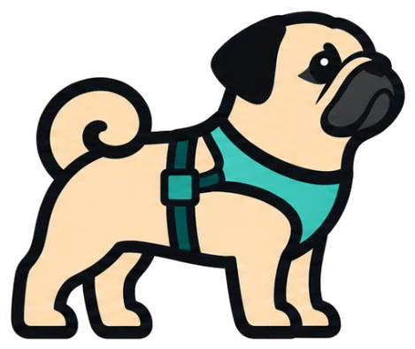

Stay curious.
Stay in the loop.
A little more clarity. A little more peace of mind.
Explore Harness →
Harness Brand & UI / 01Harness design system
A common visual language for Harness. Warm surfaces, precise information, and a calm signal when something needs attention.
01. Be clear. Say what happened and what someone can do next.
02. Stay calm. Use color for meaning. Reserve urgency for real risk.
03. Feel familiar. Reuse the same foundations across every surface.
02 / Color
Semantic tokens adapt to appearance.
The brand palette stays recognizable.
#FBFAF7Background#0D1012Headlines#2FC6B1Brand highlight#0B6156Actions & links#F8DCAEWarm accentAlways pair status color with a word. Bright teal is decoration; deep teal carries text on light surfaces.
03 / Typography
Instrument Sans / 400–700
System monospace / commands & data
Keep an eye on
what happens next.
A clear view of what happened, with the details you need to decide what comes next.
agent → shell → install script
$ pnpm installLast checked just now · Stored on this computer
04 / Layout
A four-pixel base.
Density follows the task.
481216243248644–12 inside controls. 16–24 inside cards. 32–64 between groups.
Thin borders and subtle shadows. Keep related controls close together.
05 / Components
<button class="ui-button" data-variant="primary">Protect folder</button>06 / In context
Expressive on the landing page.
Focused inside the app.
A little more clarity. A little more peace of mind.
Explore Harness →Nothing concerning so far.
07 / Development
Edit tokens for global changes. Edit primitives for shared behavior. Keep page layouts in their own stylesheets.
Both surfaces ship this exact kit. The website preparation step copies the canonical files; desktop staging bundles them with the app.
Read the implementation guide ↗public/ui/
tokens.css Color, type, space, motion
components.css Buttons, cards, fields, status
pug.png Shared brand mark
fonts/ Local font + license
index.html This reference